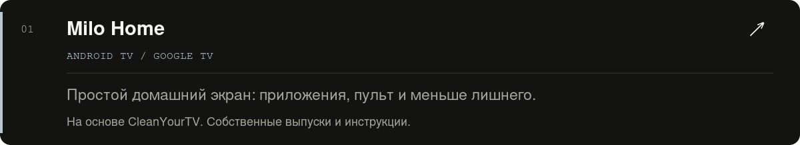
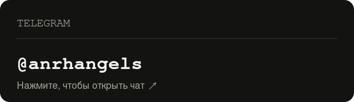
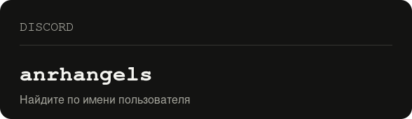

<!doctype html><html lang="ru"><meta charset="utf-8"><meta name="viewport" content="width=device-width,initial-scale=1"><title>anrhangels — профиль</title><style>body{margin:0;background:#0d1117;color:#c9d1d9;font:16px system-ui}main{max-width:900px;margin:32px auto;padding:24px;border:1px solid #30363d;border-radius:12px}p{margin:0 0 16px}img{height:auto;vertical-align:top}a{color:#c9d1d9}footer{text-align:center;font-size:12px;padding:20px}@media(max-width:600px){main{margin:8px;padding:12px}}</style><main><p align="center">
  
</p>

<a id="обо-мне"></a>

<p></p>

<a id="проекты"></a>

<p></p>

<p><a href="https://github.com/anrhangels/milo-home"></a></p>

<p><a href="https://github.com/anrhangels/linux-arizona-rp"></a></p>

<p><a href="https://github.com/anrhangels/linux-radmir-rp"></a></p>

<p><a href="https://github.com/anrhangels/linux-amazing-rp"></a></p>

<a id="контакт"></a>

<p></p>

<p align="center">
  <a href="https://t.me/anrhangels"></a>
  
</p>

<p align="center"><a href="https://t.me/anrhangels">Telegram: @anrhangels</a> &nbsp; · &nbsp; Discord: <code>anrhangels</code></p>

<footer>Локальный предпросмотр. На GitHub отступы могут отличаться.</footer></main></html>